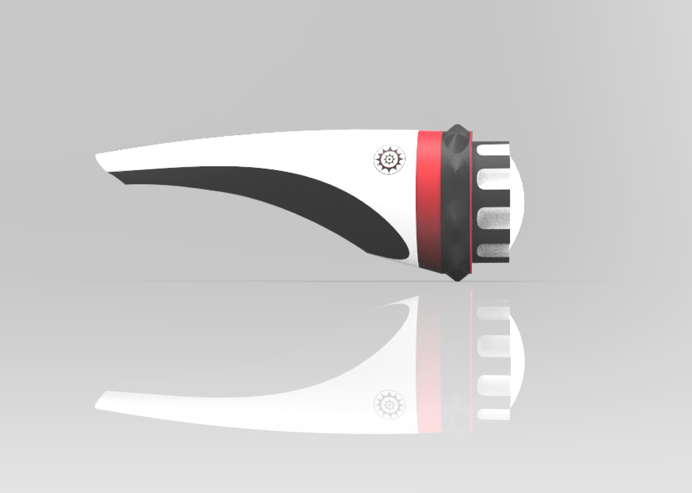

Name
張硯珩
Yen-Heng Chang
Country
台灣
Taiwan
Language
中文, English
Skills
2D : Ai / Ps
3D : Solidworks / ProE / Alias / Sketchup
Others : HTML5 / CSS / JavaScript
About Me
“As above, so below; as universe, so as soul.” human have been developing to a notably extent, but at the same time it is equally crucial to dive dipper into users feeling.
I am interested in socialogical and psychological books. They are not only inspiring, but also make me think in different aspects through the process when I design.

Information Design
How To Visit Chinese Cupid
Infographic & Poster

What happened to Taiwain's 815 power outage
Infographic & Motion graphics


Product Design

Dr. Micro
Medical Product Design
& Service Design
Blowin Sumo
Medical Product Design

Clean Express
Product Design

Eye of Bike
Product Design


Yen-Heng Chang © 2018 Copyright. All Right Reserved.
+

The infographic shows tourists the routine and what they should carry during the process of visiting the Yue-Lao.

After having some discussions with the team. I decided to illustrate the temple to a exploded drawing for two reason. First, to make the image look more conformable and more soothing in general, since we don’t want put the information to close in a specific area. Secondly, divide the processes in different parts( prepare、worship、ending) is easier for readers to receive the information.


How To Visit Chinese Cupid
Period_ 2018
Company_ Re- lab
Supervisor_ Yu Hsuan, Liu
Project Manager_ Yi Ming, He
Graphic Design_ Yen Heng, Chang
Copy Writer_ Yi Ming, He
Event Planner_ Yu Hsuan, Liu
Background
Xia-Hai City God Temple is well known for Yue-Lao’s (Chinese Love God) matchmaking skills. So it attracts tourists from all over the world visit here to pray for love.The infographic shows tourists the routine and what they should carry during the process of visiting the Yue-Lao.
Plate 1. Xia-Hai City God Temple
Concept
The routine of visiting love god in Xia-Hai Temple is complex, it makes tourists nervous. We thus want to help them by designing a better instruction.After having some discussions with the team. I decided to illustrate the temple to a exploded drawing for two reason. First, to make the image look more conformable and more soothing in general, since we don’t want put the information to close in a specific area. Secondly, divide the processes in different parts( prepare、worship、ending) is easier for readers to receive the information.
Infographic
While designing this project, I use the elements which have meanings in Chinese culture. For instances, the following path is a “red line”, which means relationship between lovers in Chinese culture. The poster contains a pair of couplet, which can be torn down. It is a Chinese custom to pray for god luck by sticking couplets written on red paper on the sides of doors.
Plate 3. the infographic poster
Became a Large Scale Event
It ends up with a big event in front of the temple. There were hundreds of people interested in the infographic poster we made for the temple.
Plate 4. the photo we took after the event
+

People were asking whether Taiwan is lack of electricity and what Taiwan Power Company (TPC) was actually doing during the power outage?


If there is a power outage happen again in the future, which kind of power plant can generate power faster and support the whole power supply system if some of the plants were broken?


What happened to Taiwain's 815 power outage
Period_ 2017-2018
Company_ Re- lab
Content Cooperation and Guideline_ PanSci
Supervisor_ Yu Hsuan, Liu
Project Manager_ Wei Jun, Zhang
Graphic Design_ Yen Heng, Chang
Copy Writer_ Wei Jun, Zhang
Motion Design_ Ren Chih, Yeh
Background
An unexpected power outage stroke Taiwan at 16:51 in 15 August 2017. Six million users were influenced. The problem were solved at 21:40.People were asking whether Taiwan is lack of electricity and what Taiwan Power Company (TPC) was actually doing during the power outage?
Plate 1. TPC's report
Concept
There are monitoring screens with many kinds of statistics monitored by the staff of TPC. We designed an interface that mimics the TPC’s monitoring screen, hoping the readers can understand the scenario easier.
Plate 2. the process of making the video
Infographic
After watching the video, people might still wonder what kind of power plant is better for Taiwan.If there is a power outage happen again in the future, which kind of power plant can generate power faster and support the whole power supply system if some of the plants were broken?
Plate 3. the process and of making the infographic
+
The typical incubation period for influenza is 1 to 4 days. Most people may be able to infect others beginning 1 day before symptoms develop and up to 5 to 7 days after becoming sick. If they don’t go to a doctor at the beginning, it will increase their death rate and may infect others.

2. reduce the infection rate
3. data for government to analyze - big data


Dr. Micro
period_ 2016
co-designer_ Hao，Zheng / Sheng Yi, Chen
role_ concept design / graphic design / app design
How to control infectious diseases ?
Taiwan is suffered from different diseases in different seasons, such as dengue fever in the summer and flu in the winter.The typical incubation period for influenza is 1 to 4 days. Most people may be able to infect others beginning 1 day before symptoms develop and up to 5 to 7 days after becoming sick. If they don’t go to a doctor at the beginning, it will increase their death rate and may infect others.
Goals
1. let patients know they are infectious - by testing2. reduce the infection rate
3. data for government to analyze - big data
Mask + Test paper
Mask could be a good way to gain data, since it is common. We hope to collect the data through saliva testing from users’ masks.(Saliva testing is a diagnostic technique based on a chemical reaction called antigen-antibody agglutination.)
Plate 1. a mask equipe with a testing function
Plate 2. the antigen-antibody agglutination
Dr. micro chip
The chip has two layers. The upper layer has a QR code with 2 holes, and the one underneath has the test papers. The chip will show different patterns because of the different results. Users need to scan the code to know the result. At the same time, the data is uploaded simultaneously.
Plate 3. layers of the chip, and their functions

Plate 4. the chip
Plate 5. infection rate in different areas (based on users data)
App design
After users scan the chip, the datas will be uploaded simultaneously, so we can analyze the infection rate of each area. Meanwhile, government can make a more appropriate decision on disease control. In order to reward users to upload the data, Dr. Micro offer discounts to them.
Plate 6. flow map of the app
Operation
Based on the data, government can make a better decision on disease control. We hope all kind of masks to equip with Dr. Micro. We hope this system can go further with the government’s support.
Plate 7. flow chart of operation
+

It is very important to maintain cardiovascular function in older age, it will decrease the chance to get diseases and improve other functions in our body. There is a medical device called incentive spirometer( it is often recommended by doctors to their elder patients after heart related surgeries), which is used to help people improve their lungs’ function. And I think that device is very interesting, but it could be better if it is more human and emotional. Therefore, I wanted to redesign it.
According to previous reasons I mentioned, I decided to make the device as a Sumo Battle( a traditional Japanese Wrestling). There are two sides of the device, each side have a figure. Each figure is driven by each user, the user have to blow to make the figure move forward to push against the opponent, the one who makes their opponent’s figure touch to the border win.

Blowin Sumo
period_ 2015
material_ wood / plastic tube / styrofoam ball
Background
Taiwan has already been an aging society since 1993. According to Ministry of Interior of Taiwan, the proportion of elderly people of Taiwan ranks number 3 in Asia, behind Japan and South Korea. Therefore, it becomes more and more important to develop and improve the Long-term care and Seniors products.It is very important to maintain cardiovascular function in older age, it will decrease the chance to get diseases and improve other functions in our body. There is a medical device called incentive spirometer( it is often recommended by doctors to their elder patients after heart related surgeries), which is used to help people improve their lungs’ function. And I think that device is very interesting, but it could be better if it is more human and emotional. Therefore, I wanted to redesign it.
Plate 1. incentive spirometer
Concept
Since elders could resist to new things rather than normal people, so it is crucial to think deeply about mental aspect. Firstly, I decided to make it a 2 players interactive device, which meant the elders can play it with their partner or their grandchildren. We all know that elders could be happier when being accompany. Secondly, I wanted the device having Chinese or Japanese culture element, because Taiwan is a country profoundly influenced by these two countries( Taiwan had been ruled by Japan from 1895A.D. to 1945A.D.).According to previous reasons I mentioned, I decided to make the device as a Sumo Battle( a traditional Japanese Wrestling). There are two sides of the device, each side have a figure. Each figure is driven by each user, the user have to blow to make the figure move forward to push against the opponent, the one who makes their opponent’s figure touch to the border win.
Plate 2. Japanese sumo
Mechanism and Functions
There are two individual tubes connect to plastic pipes with styrofoam balls in it( hygienic purpose), and the balls connect to the figures. Therefore, when you blow to the tube, the figure will go forward.Plate 3. exploded drawing of Blowin Sumo
Plate 4. the working modle
+
Clean Express offers a simple and convenient shower facility for the victims who stock in emergency shelters. Due to the tough transit route, air parcel might be adopted to deliver an easy-to-use and moveable shower module to these disaster area.
Clean Express


period_ 2016
co-designer_ Hao，Zheng / Sheng Yi, Chen
role_ product design / graphic design
Clean Express offers a simple and convenient shower facility for the victims who stock in emergency shelters. Due to the tough transit route, air parcel might be adopted to deliver an easy-to-use and moveable shower module to these disaster area.